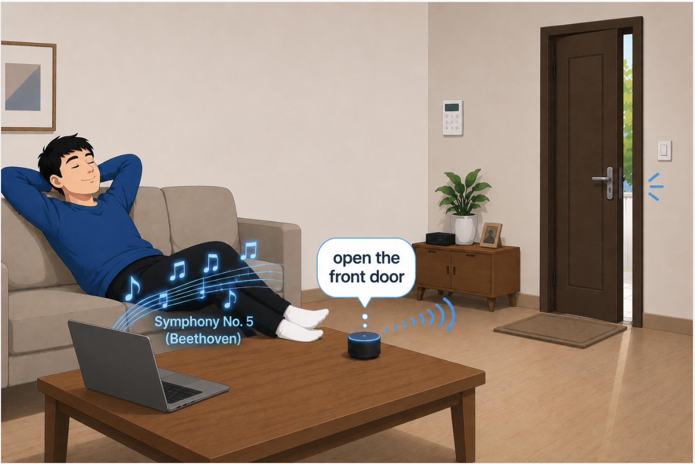

DivNet
What are the threats?
Audio adversarial examples are maliciously crafted audio clips that sound normal to human listeners yet cause automatic speech recognition (ASR) systems to produce attacker-intended outputs. Such attacks pose serious real-world threats, including hijacking smarthome devices, triggering unauthorized transactions, falsifying meeting transcripts, and manipulating voice-controlled vehicles.
 |
| An audio clip streamed from the internet is embedded with a hidden command ("open the front door"). It sounds like ordinary music to human listeners, yet the smart-home device interprets the concealed command as legitimate and unlocks the door. |
| An audio clip is embedded with a hidden command ("transfer one thousand dollars") and played out loud near a person who is talking to their smart banking assistant. The clip sounds like ordinary music to human listeners, yet the assistant interprets the concealed command as a legitimate instruction and carries out an unauthorized money transfer. |
Samples
The same audio is fed to each deployment: the original (the attack target) and two of its variants. On benign audio all three recognize correctly and accurately. On adversarial audio, only the original model is fooled into the attacker's target phrase — each variant hears something else, and the two variants disagree with each other.
Benign audio
Normal speech. Every model transcribes it the same way.
| Audio | Original model | Variant 1 | Variant 2 |
|---|---|---|---|
| HE COULD WAIT NO LONGER | HE COULD WAIT NO LONGER | HE COULD WAIT NO LONGER | |
| YOUR POWER IS SUFFICIENT I SAID | YOUR POWER IS SUFFICIENT I SAID | YOUR POWER IS SUFFICIENT I SAID |
CW adversarial examples
Gradient-based attack. The original model is hijacked; the variants are not.
| Audio | Original model | Variant 1 | Variant 2 |
|---|---|---|---|
| A MAN IN THE WELL | Y MY IN | A I MA INSA WELL | |
| YES MANY TIMES | unnot recognized | YES A ANE KINES | |
| I KNOW NOW WHAT BRINGS ME TO THE FIRE | YOUR MOTHER THE QUEEN MA CAN E I | YOUR MOTHER THE QUEEN Y STANDI BY | |
| WHERE IS MY HUSBAND | THERE IS ME AEN | WHERE IS MEALS TEN | |
| I DID NOT KNOW WHAT HE MEANT | I TEN E MONY MEN | A DREADEUM WHAT HE MENT |
PHVC adversarial examples
Signal-processing hidden voice commands. Only the original obeys the command.
| Audio | Original model | Variant 1 | Variant 2 |
|---|---|---|---|
| TURN ON ALL THE LIGHTS | not recognized | CARE O THE LICS | |
| AH WHAT SHALL WE GO FOR A HOLE | not recognized | I WATHA OVER WHOLE |
KENKU adversarial examples
A state-of-the-art transferable attack. The variants still hold.
| Audio | Original model | Variant 1 | Variant 2 |
|---|---|---|---|
| WHAT IS THE WHEATHER TODAY | not recognized | DAY | |
| UNLOCK THE DOORS | not recognized | ORS |
ALIF adversarial examples
Linguistic-feature attack with high reported transferability. Variants diverge.
| Audio | Original model | Variant 1 | Variant 2 |
|---|---|---|---|
| GOOD MORNING | not recognized | not recognized | |
| CLEAR NOTIFICATION | ER NEFICATION | HOIL NOFICATION |